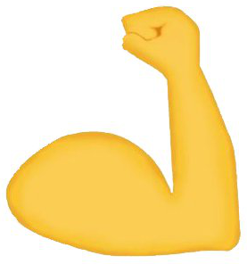

Rólunk

Mi egy Bajnok csapat vagyunk. Egy többnyire ismeretlen területen, akárcsak Bólyai János, a semmiből egy új világot teremtettünk.

Aranka
Erik
Géza
László
Fizika-informatika szakos vagyok. A Budapesti Gépészeti Szakképzési Centrum Katona József Technikumban túlnyomórészt hálózatokat tanítok.
Szilvia